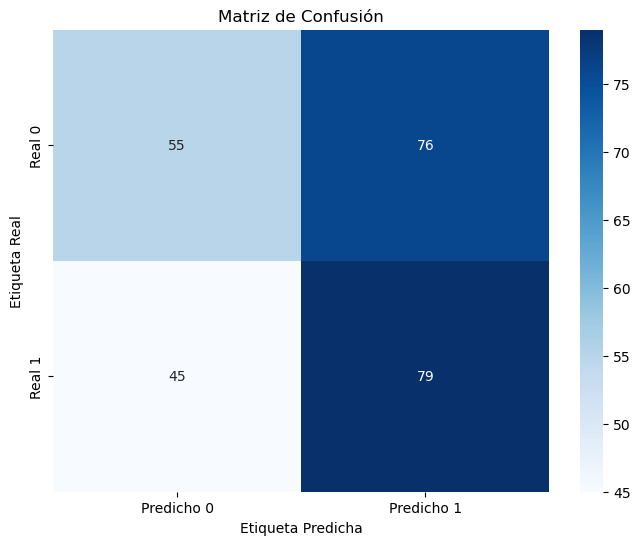
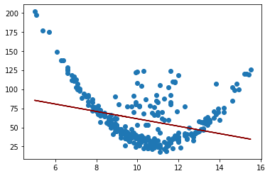
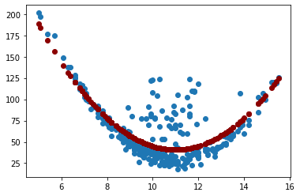
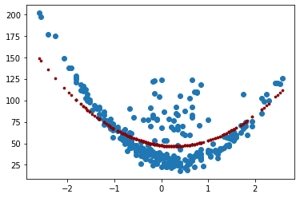
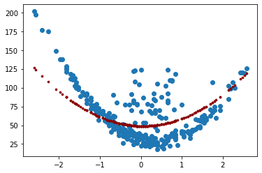

Regresión Lineal¶
Con la regresión lineal se busca modelar la relación entre una o múltiples variables independientes (\(X_i\)) y una variable dependiente (\(y\)). También se puede predecir resultados en una escala continua.
De forma univariada se modela la relación entre una característica simple (una sola variable explicativa \(X\)) y una respuesta de valor continua (variable dependiente \(y\)). La relación lineal se define con la siguiente ecuación:
\(y\): variable dependiente o de respuesta. También llamada variable regresora.
\(X\): variable independiente.
Esta es la ecuación de una línea recta de la forma pendiente-intercepto. La variable aleatoria \(y\) es una función lineal de \(X\) con términos independientes \(\beta_0\) y pendiente \(\beta_1\). Estos dos parámetros son los que se deben estimar en la regresión lineal para describir la relación entre las variables \(X\) y \(y\). Dicho de otra forma, con la regresión lineal se busca la recta de mejor ajuste por medio de la búsqueda de los pesos óptimos (\(\beta_0\) y \(\beta_1\)).
Las regresiones lineales hacen parte del aprendizaje automático supervisado.
Código para Regresión Lineal:¶
Se usará scikit-learn en Python para implementar la Regresión
Lineal:
En Python se debe importar el módulo LinearRegression:
from sklearn.linear_model import LinearRegression
Luego se crea un objeto regresor indicando con la función
LinearRegression(), el cual lo llamaremos lin_reg así:
lin_reg = LinearRegression()
El ajuste del modelo se hace con la función .fit() así:
lin_reg.fit(X, y)
Los parámetros estimados se visualizan con:
lin_reg.intercept_
lin_reg.coef_
Por último, se realiza la predicción con el modelo ajustado usando la
función .predict(), los valores predichos los llamaremos y_pred:
y_pred = lin_reg.predict(X)
Importar librerías:
import pandas as pd
import numpy as np
import matplotlib.pyplot as plt
Importar datos:
df = pd.read_csv("regresion.csv", sep=";", decimal=",")
print(df.head())
X y
0 9.0 44.7
1 10.1 78.0
2 11.6 83.0
3 9.1 80.0
4 9.7 77.0
Visualización de los datos:
plt.scatter(df["X"], df["y"])
plt.xlabel("X")
plt.ylabel("y")
Text(0, 0.5, 'y')

Ajuste del modelo:
X = df[["X"]]
print(X.head())
X
0 9.0
1 10.1
2 11.6
3 9.1
4 9.7
y = df["y"]
print(y.head())
0 44.7
1 78.0
2 83.0
3 80.0
4 77.0
Name: y, dtype: float64
from sklearn.linear_model import LinearRegression
lin_reg = LinearRegression()
lin_reg.fit(X, y)
LinearRegression()
lin_reg.intercept_
109.62572542151227
lin_reg.coef_
array([-4.8413394])
y_pred = lin_reg.predict(X)
print(y_pred[:5])
[66.05367086 60.72819752 53.46618843 65.56953692 62.66473328]
plt.scatter(X, y)
plt.plot(X.values, y_pred, color="darkred")
[<matplotlib.lines.Line2D at 0x1ca53e9ac70>]

Evaluación del desempeño:¶
Las métricas más usadas para evaluar el desempeño de una regresión son el \(R^2\), MSE y RMSE. Recuerde que RMSE es la raíz cuadrada de MSE, así que con una de estas dos últimas métricas es suficiente, lo más común es utilizar el MSE.
Se deben importar los módulos: r2_score y mean_squared_error
así:
from sklearn.metrics import r2_score, mean_squared_error
La aplicación de estas dos métricas de desempeño se hace ingresando la variable \(y\) real y la \(y\) pronosticada:
r2_score(y, y_pred)
mean_squared_error(y, y_pred)
from sklearn.metrics import r2_score, mean_squared_error
r2_score(y, y_pred)
0.09061023513640842
mean_squared_error(y, y_pred)
961.9004578893185
Regresión Polinómica:¶
Se usa la clase PolynomialFeatures de Scikit-Learn para
transformar los datos de entrenamiento.
Para un polinomio de grado 2, cada variable del conjunto de entrenamiento se eleva al cuadrado y se transforma en una sola variable.
from sklearn.preprocessing import PolynomialFeatures
poly_features = PolynomialFeatures(
degree=2, include_bias=False
) # Convertir las variables en polinomio de grado 2.
X_poly = poly_features.fit_transform(X) # Transformación de las variables.
Con las variables transformadas se vuelve a utilizar el código de la regresión lineal:
lin_reg = LinearRegression()
lin_reg.fit(X_poly, y)
LinearRegression()
y_pred = lin_reg.predict(X_poly)
print(y_pred[:5])
[57.26317261 44.20950062 42.46285455 55.66483885 47.80370879]
r2_score(y, y_pred)
0.607048646135817
mean_squared_error(y, y_pred)
415.6414573974035
plt.scatter(X, y)
plt.scatter(X.values, y_pred, color="darkred")
<matplotlib.collections.PathCollection at 0x1ca53f12b80>

Regularización para regresión:¶
La regularización aborta el problema del sobreajuste y lo hace reduciendo los valores de los parámetros del modelo para inducir una penalización contra la complejidad.
Regresión Ridge:¶
La regresión Ridge, también llamada penalización \(L2\). La penalización se realiza agregando \(\alpha\sum_{i=1}^n{w_i^2}\) a la función de costos, que en este caso podría ser la función de mínimos cuadrados o la función del MSE.
Si se aumenta el hiperparámetro \(alpha\), se aumenta la fuerza de regularización y los pesos disminuyen volviendo la curva más plana. Tenga en cuante que el intercepto \(w_0\) no se regulariza.
Es importante escalar los datos antes de realizar la regresión Ridge, ya que es sensible a la escala de las entidades de entrada. Esto es cierto para la mayoría de los modelos regularizados.
from sklearn.linear_model import Ridge
ridge_reg = Ridge(alpha=1, solver="cholesky")
ridge_reg.fit(X, y)
y_pred = ridge_reg.predict(X)
Escalado de variables:
from sklearn.preprocessing import StandardScaler
scaler = StandardScaler()
X = scaler.fit_transform(X)
print(
X[:10,]
)
[[-0.63167125]
[-0.08769549]
[ 0.65408965]
[-0.58221891]
[-0.28550486]
[ 0.40682794]
[-0.38440954]
[ 1.59368415]
[ 0.20901857]
[-0.18660017]]
Transformamos la variable \(X\) escalada en un polinomio de grado 2.
poly_features = PolynomialFeatures(
degree=2, include_bias=False
) # Convertir las variables en polinomio de grado 2.
X_poly = poly_features.fit_transform(X) # Transformación de las variables.
from sklearn.linear_model import Ridge
\(\alpha=200\)
Para valores altos de \(\alpha\), la curva se vuelve plana.
ridge_reg = Ridge(alpha=200)
ridge_reg.fit(X_poly, y)
y_pred = ridge_reg.predict(X_poly)
print(y_pred[:5])
[56.77465056 48.27006652 48.3944526 55.70095409 50.52109563]
r2_score(y, y_pred)
0.5500490903859909
mean_squared_error(y, y_pred)
475.93232594865617
plt.scatter(X, y)
plt.scatter(X, y_pred, color="darkred", s=7)
<matplotlib.collections.PathCollection at 0x1ca543ed520>

Regresión Lasso:¶
Regresión Lasso (Least Absolute Shrinkage and Selection Operator Regression) es otra versión regularizada de la regresión lineal: al igual que la regresión Ridge, agrega un término de regularización a la función de costo, pero usa la penalización \(L1\) que es \(\alpha\sum_{i=1}^n{|w_i|}\)
Una característica importante de Lasso Regression es que tiende a eliminar los pesos de las variables menos importantes (es decir, establecerlas en cero). En otras palabras, Lasso Regression realiza automáticamente la selección de variables y genera un modelo disperso (es decir, con pocos pesos de variables distintos de cero).
from sklearn.linear_model import Lasso
\(\alpha=10\)
Para valores altos de \(\alpha\), la curva se vuelve plana.
lasso_reg = Lasso(alpha=10)
lasso_reg.fit(X_poly, y)
y_pred = lasso_reg.predict(X_poly)
print(y_pred[:5])
[53.9927972 49.0570819 52.81694463 53.27511162 50.09873172]
r2_score(y, y_pred)
0.45048543293700205
mean_squared_error(y, y_pred)
581.2450657546549
plt.scatter(X, y)
plt.scatter(X, y_pred, color="darkred", s=7)
<matplotlib.collections.PathCollection at 0x1ca54459220>

Elastic Net:¶
Elastic Net es un término medio entre Ridge Regression y Lasso Regression. El término de regularización es una combinación simple de los términos de regularización de Ridge y Lasso.
Agrega lo siguiente a la función de costos: \(r\alpha\sum_{i=1}^n{|w_i|}+\left(1-t\right)/2\sum_{i=1}^n{w_i^2}\)
Ridge es un buen valor predeterminado, pero si sospecha que solo unas pocas variables son útiles, debe preferir Lasso o Elastic Net porque tienden a reducir el peso de las funciones inútiles a cero.
En general, se prefiere Elastic Net sobre Lasso porque Lasso puede comportarse de manera errática cuando la cantidad de variables es mayor que la cantidad de instancias de entrenamiento o cuando varias variables están fuertemente correlacionadas.
from sklearn.linear_model import ElasticNet
elastic_net = ElasticNet(alpha=10, l1_ratio=1)
elastic_net.fit(X_poly, y)
y_pred = elastic_net.predict(X_poly)
print(y_pred[:5])
[53.9927972 49.0570819 52.81694463 53.27511162 50.09873172]
r2_score(y, y_pred)
0.45048543293700205
mean_squared_error(y, y_pred)
581.2450657546549
plt.scatter(X, y)
plt.scatter(X, y_pred, color="darkred", s=7)
<matplotlib.collections.PathCollection at 0x1ca544c1940>